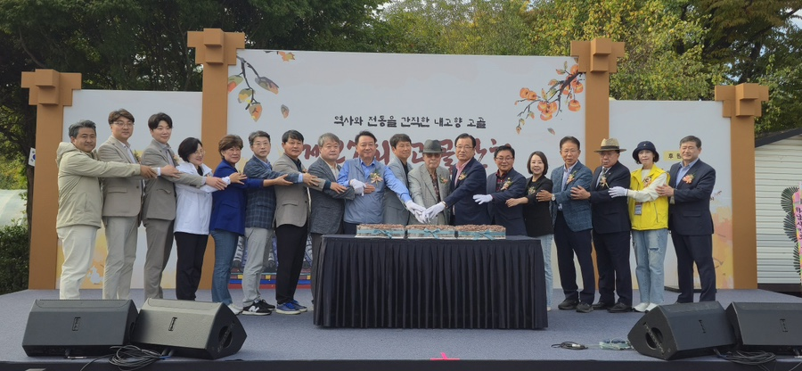
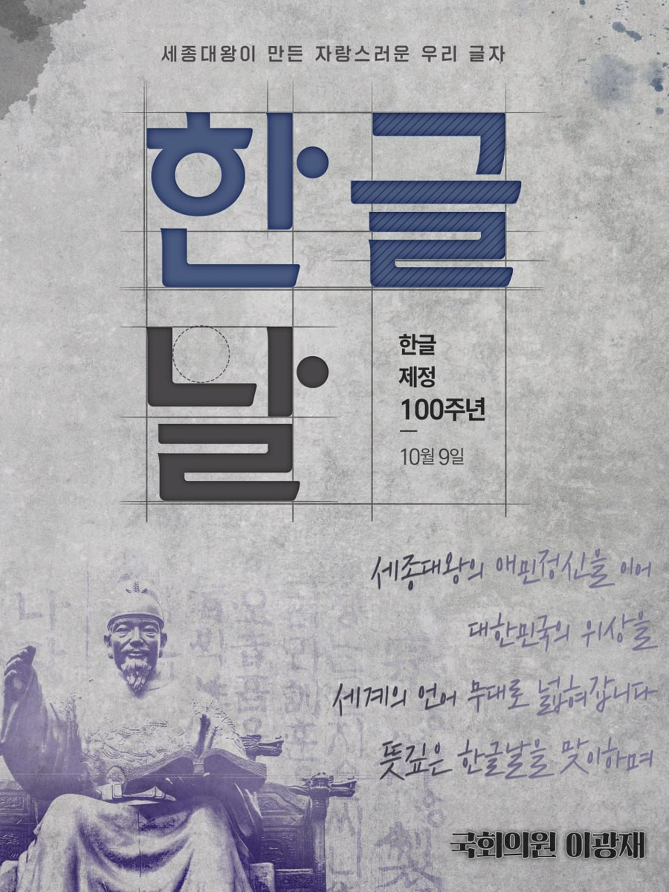
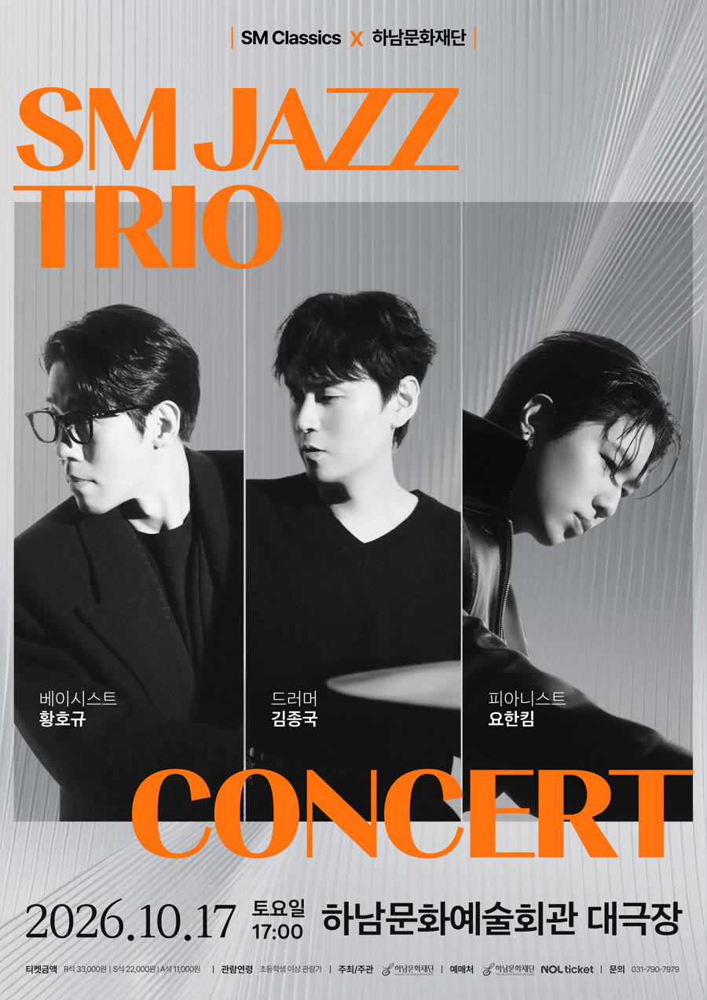
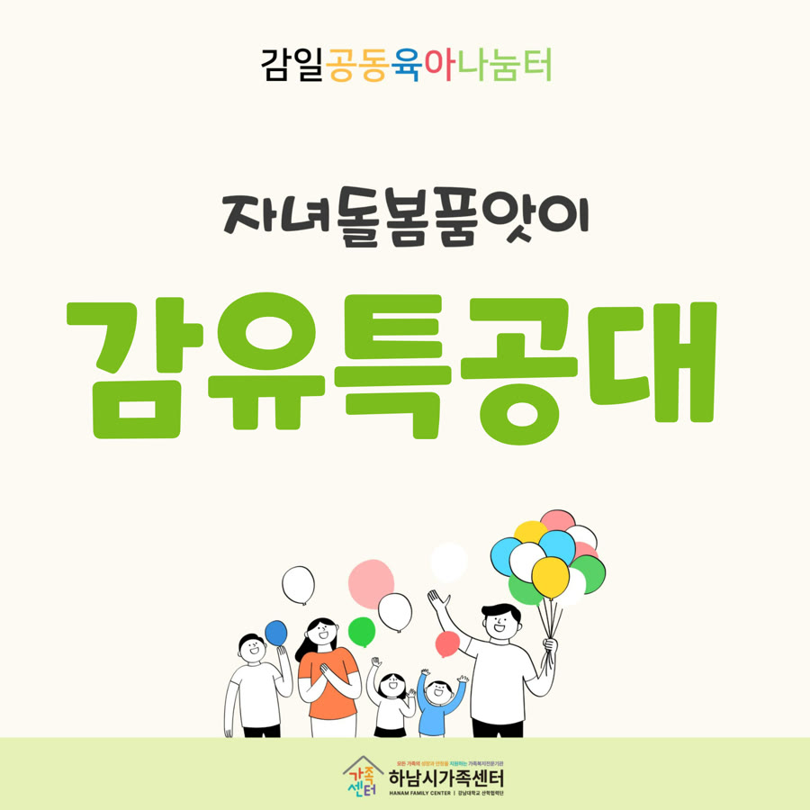
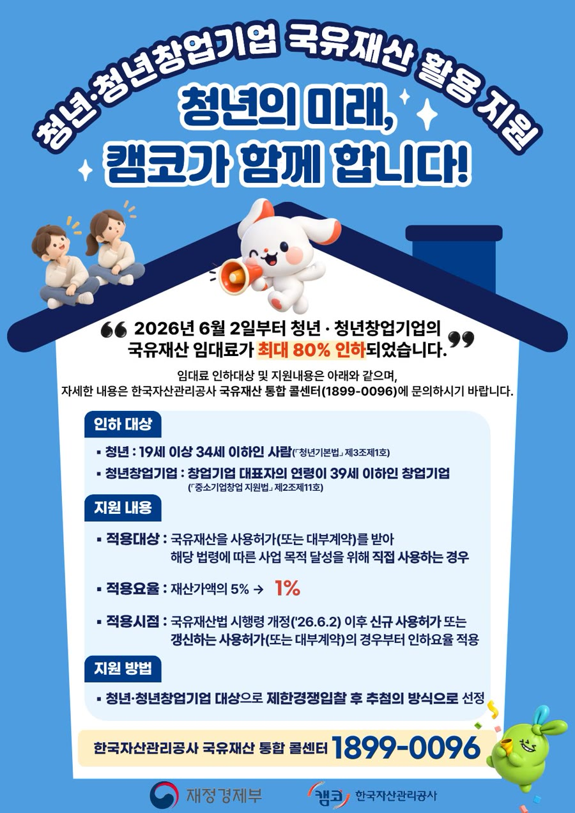

55호 | 2026년 10월 12일 발행
📌 이번 호 주요 목차
 우리동네 국회의원 이광재
우리동네 국회의원 이광재
📝 현장일지
이광재의원, 제27회 고골잔치서 "교산신도시, 기다리신 만큼 이제는 속도로 답하겠습니다"
• 10월 11일 제27회 고골잔치에서 춘궁동 주민들과 교산신도시 현안 논의
• 약 3만 9천 세대 규모 교산신도시, 늦어진 만큼 속도감 있게 추진
• 대표발의한 주민생계조합 법안 통과 시 경비·조경 등 600개 이상 일자리 주민 몫으로 기대
• 노인복지관 창호 교체로 어르신들 겨울 추위 대비
• "큰 사업은 속도 있게, 작은 불편은 세심하게"
• 약 3만 9천 세대 규모 교산신도시, 늦어진 만큼 속도감 있게 추진
• 대표발의한 주민생계조합 법안 통과 시 경비·조경 등 600개 이상 일자리 주민 몫으로 기대
• 노인복지관 창호 교체로 어르신들 겨울 추위 대비
• "큰 사업은 속도 있게, 작은 불편은 세심하게"

📌 출처: 이광재 공식 네이버 블로그
📝 현장일지
이광재의원 "한글을 세계와 만나는 통로로"… 한글날 맞아 '세계의 교실' 구상 제안
• 한류 팬 2억 명 시대, 한국어를 배우려는 세계인 꾸준히 증가
• 21세기 대한민국이 세계에 줄 수 있는 것은 '교육'
• EBS·방송대 교육 자료에 AI·번역을 더해 세계 아이들과 함께 배우는 길 제안
• 세종학당 확대, 해외 대학 한국어학과 확충 강조
• "한글이 배움과 문화의 길, 대한민국의 힘이 되도록"
• 21세기 대한민국이 세계에 줄 수 있는 것은 '교육'
• EBS·방송대 교육 자료에 AI·번역을 더해 세계 아이들과 함께 배우는 길 제안
• 세종학당 확대, 해외 대학 한국어학과 확충 강조
• "한글이 배움과 문화의 길, 대한민국의 힘이 되도록"

📌 출처: 이광재 공식 네이버 블로그
📰 언론보도
[한스경제] 이광재의원 "국가는 지출자 아닌 투자자"… 국정감사서 '미래를 바꾸는 재정' 강조
이광재 국회 예결위원장은 올해 국정감사에서 예산의 규모보다 국민이 체감하는 성과를 강조했습니다. 정부 예산·연기금·국공유재산·시장 자본 등 '네 개의 돈주머니'를 한눈에 놓고 사업을 설계하자며 국가자산기본법 제정을 제안했습니다. 지은 지 30년 넘은 학교가 39.1%에 이른다며 학교 현대화 로드맵을 촉구했고, 10년간 812조 원에 달한 이월·불용액을 줄이기 위한 AI 통합 예·결산 시스템도 제안했습니다.
📌 출처: 한스경제 (신보경 기자)
📰 언론보도
[국민일보] 이광재의원 "지역 발전 성과를 매년 숫자로 증명하는 '정치 성적표' 시대 열자"
이광재 국회 예결위원장이 국가데이터처 자료를 분석한 결과, 시·군·구 지역내총생산(GRDP) 통계가 공표되기까지 평균 30개월이 걸리는 것으로 나타났습니다. 6·3 지방선거 때 유권자가 볼 수 있던 최신 통계도 2022년 기준이었습니다. 시·도마다 담당 인력이 1명뿐이라는 점도 지적한 이 의원은 "지역 발전 성과를 매년 숫자로 증명하는 '정치 성적표' 시대를 열자"며 국가 차원의 집계 시스템 구축을 촉구했습니다.
📌 출처: 국민일보 (천양우 기자)
📰 하남 지역 주요 뉴스
🏠 주거/청약
감일·위례 신혼희망타운 행복주택 예비입주자 73명 모집… 오늘(12일)부터 14일까지 접수
LH가 하남 감일·위례 신혼희망타운 행복주택 예비입주자 73명을 모집합니다. 모집 인원은 하남감일 A7블록 20명, 위례 A3-3b블록 53명이며, 청약 접수는 10월 12일(월) 오전 10시부터 14일(수) 오후 4시까지 LH청약플러스 홈페이지와 모바일 앱에서 받습니다. 신청 대상은 무주택 신혼부부(혼인 7년 이내 또는 6세 이하 자녀)·예비신혼부부·한부모가족(6세 이하 자녀)이며, 소득은 도시근로자 월평균소득 100% 이하(맞벌이 120% 이하), 총자산 3억 4,500만 원 이하 등의 기준이 적용됩니다. 하남시와 서울·구리·남양주·광주·성남 거주자가 1순위입니다. 임대조건은 보증금 1억 1,612만~1억 4,804만 원, 월 임대료 48만~61만 원 선입니다. 다만 공가·해약에 대비한 예비입주자 모집이라 선정되더라도 바로 입주가 확정되는 것은 아니며, 서류제출 대상자는 26일 발표, 당첨자는 2027년 1월 28일 발표 예정입니다.
📌 출처: 비건뉴스 (이정수 기자)
🎓 교육
미사고, 'AI기반 창의융합' 교과특성화학교 선정… 2027년부터 AI·데이터 융합교육
미사고등학교가 'AI기반 창의융합'을 주제로 한 지역주도 교과특성화학교로 선정돼 2027년부터 인공지능·데이터 기반 융합교육을 본격 운영합니다. 정보·프로그래밍·인공지능 기초·데이터 과학 등 AI·디지털 교과를 중심으로, 사회문제 탐구·윤리문제 탐구·기후변화와 환경생태 같은 융합 교과를 함께 운영해 기술 활용 능력과 인문·사회적 성찰을 고루 갖춘 인재를 키운다는 계획입니다. 탐구보고서 아카데미, 창의인성 토론캠프, 이공계 프로젝트 같은 체험활동도 마련하고, 경정공원 사제동행 달리기, 당정뜰·하남 유니온파크 탐방 등 지역과 연계한 활동도 진행합니다. 함동철 교장은 "학생들이 흥미와 진로에 맞는 주제를 주도적으로 탐구하고 미래 사회를 설계하는 인재로 성장하도록 적극 지원하겠다"고 말했습니다.
📌 출처: 교차로저널 (이상필 기자)
🚗 시정/세정
하남시, 11월 30일까지 교통과태료 체납액 특별징수… "과태료 사칭 스미싱 문자 주의"
하남시가 11월 30일까지 '하반기 교통과태료 체납액 특별징수 기간'을 운영합니다. 9월 기준 하남시 교통과태료 체납은 6,656건, 12억 4,400만 원 규모로, 시는 이 가운데 약 1억 원을 징수 목표로 잡았습니다. 500만 원 이상 고액·상습 체납자 171명은 재산·차량 보유 현황을 확인해 부동산·차량 압류, 번호판 영치 등 체납처분에 나섭니다. 먼저 체납자에게 모바일과 우편으로 안내 서한을 보내 스스로 납부할 기회를 주고, 기초생활수급자·영세소상공인 등 생계형 체납자에게는 분할납부 같은 방법을 안내합니다. 체납액은 위택스, ARS, 온라인 간편결제, 무인수납기로 낼 수 있고, 경찰청 부과분은 '경찰청교통민원24'에서 확인·납부하면 됩니다. 시는 최근 공공기관을 사칭해 과태료 납부를 유도하는 스미싱 문자가 돌고 있다며, 출처가 불분명한 링크나 앱 설치 요구는 절대 누르지 말라고 당부했습니다.
📌 출처: 전국매일신문 (전진섭 기자)
💬 하남 맘카페 HOT 이슈
이번 주 하남 지역 맘카페(미사맘스클럽, 아이품애, 하강맘, 위례에서 공부하기 등)에서 많이 오르내린 HOT 이슈 TOP 3입니다.
1️⃣ [교통] "5호선 타면 자꾸 마천행을 타요"… 미사·하남행 열차 구분, 출근길 혼잡 질문 이어져
현황: 미사맘스클럽에는 서울에 갔다가 미사로 돌아올 때 자꾸 마천행 열차를 탄다는 글이 올라와 공감을 얻었습니다. 열차가 들어올 때 행선지 안내방송이 한 번만 나오는 것 같고, 잘못 탔다 싶어도 열차 안 전광판에는 다음 역만 떠서 헷갈린다는 내용으로 "민원을 넣으면 개선될까요?"라고 물었습니다. 아이 등교 뒤 오전 9시쯤 미사역에서 5호선을 타고 출근하려는데 그 시간에도 붐비는지 묻는 글도 있었고, 아이품애 카페에는 하남시청에서 덕풍시장·풍산초교·미사28단지를 거쳐 인천공항으로 가는 공항버스 시간표가 공유됐습니다.
💡 주민 포인트: 5호선은 강동역 다음부터 하남검단산행과 마천행으로 갈라집니다. 미사·하남으로 갈 때는 승강장 전광판과 열차 앞쪽·옆면 행선지에서 '하남검단산'을 꼭 확인하고, 마천행을 탔다면 강동역에서 내려 갈아타면 됩니다.
💬 주민 반응: "저만 그런 게 아니었네요"라는 댓글이 이어졌고, 강동역에서 미리 갈아타는 요령과 덜 붐비는 칸을 알려 주는 댓글도 많았습니다.
📌 출처: 네이버 카페 (미사강변도시 미사맘스클럽, 아이품애 하남맘)
2️⃣ [건강] "독감 주사 4만 원, 저만 비싸게 맞았나요?"… 접종 가격·병원 문의 봇물
현황: 독감이 일찍 돌기 시작했다는 소식에 미사맘스클럽에는 독감 예방접종 관련 글이 쏟아졌습니다. 4만 원을 내고 맞았는데 남편은 다른 병원에서 2만 5천 원에 맞았다며 "보통 3만~3만 5천 원 아니냐"고 묻는 글, 성인 접종이 저렴한 곳을 공유해 달라는 글이 올라왔습니다. 주말 소아과 대기가 너무 길다며 6살 아이 접종이 가능한 다른 병원을 찾는 글, 무료 접종 때 특정 제조사 백신을 놔 주는 병원을 묻는 글도 이어졌습니다.
💡 주민 포인트: 생후 6개월~13세 어린이, 임신부, 65세 이상 어르신은 국가 무료 접종 대상입니다. 성인 유료 접종은 병원마다 가격이 달라 미리 전화로 확인하는 것이 좋고, 소아과는 평일 오전이 비교적 한산합니다. 가까운 지정 의료기관은 질병관리청 '예방접종도우미' 누리집에서 찾을 수 있습니다.
💬 주민 반응: "같은 동네에서도 이렇게 차이가 나네"라는 반응과 함께, 대기가 짧았던 병원과 가격 정보를 나누는 댓글이 많았습니다.
📌 출처: 네이버 카페 (미사강변도시 미사맘스클럽, 하강맘)
3️⃣ [교육] "고교 입학설명회가 같은 날 겹쳐요"… 중3 학부모들 일정 분산 민원 제안
현황: 미사맘스클럽에는 하남 지역 일부 고등학교 입학설명회가 같은 날 열려 여러 학교를 비교하기 어렵다며, 광주하남교육지원청에 일정 분산을 요청하는 민원을 넣자는 글이 올라왔습니다. 광주 지역은 학교별로 일정이 분산된 편인데 하남은 겹치는 곳이 있어, 그대로 두면 내년에도 반복될 수 있다는 지적입니다. 위례 교육 카페에는 감일고 입학설명회가 10월 27일(화)에 열린다며 사전 신청을 안내하는 글이, 미사 카페에는 예비고 학원 정보를 묻는 중3 학부모 글도 이어졌습니다.
💡 주민 포인트: 관심 있는 학교의 설명회 날짜와 사전 신청 여부를 학교 홈페이지에서 먼저 확인해 두세요. 일정이 겹치면 학교 설명회 자료나 영상이 따로 공개되는지 문의해 보는 것도 방법입니다.
💬 주민 반응: "몸이 두 개도 아니고 어떻게 다 가냐"는 공감 댓글과 함께, 학교별 설명회 일정을 정리해 공유하는 글이 많았습니다.
📌 출처: 네이버 카페 (미사강변도시 미사맘스클럽, 위례에서 공부하기, 하남미사 맘클라스)
🎭 ALL IN 하남라이프
2026년 10월 12일 기준 한눈에 보는 하남시 최신 문화·행사·교육 안내 가이드
🎷 2026.10.17(토) 17:00 | 재즈 콘서트 · 타임세일 40%
SM JAZZ TRIO CONCERT (하남문화예술회관 대극장)
"이번 주 토요일, 가을 저녁을 물들이는 재즈 선율 — 지금 40% 할인"
SM Classics와 하남문화재단이 함께하는 무대로, 베이시스트 황호규·드러머 김종국·피아니스트 요한킴이 SM 재즈 트리오로 호흡을 맞춥니다.
🗓 일시: 2026년 10월 17일(토) 오후 5시
📍 장소: 하남문화예술회관 대극장(검단홀)
👥 관람연령: 초등학생 이상
💰 티켓(타임세일 40%): R석 33,000원 → 19,800원 / S석 22,000원 → 13,200원 / A석 11,000원 → 6,600원
🎟 예매: 하남문화재단 홈페이지, NOL 티켓
☎️ 문의: 031-790-7979
SM Classics와 하남문화재단이 함께하는 무대로, 베이시스트 황호규·드러머 김종국·피아니스트 요한킴이 SM 재즈 트리오로 호흡을 맞춥니다.
🗓 일시: 2026년 10월 17일(토) 오후 5시
📍 장소: 하남문화예술회관 대극장(검단홀)
👥 관람연령: 초등학생 이상
💰 티켓(타임세일 40%): R석 33,000원 → 19,800원 / S석 22,000원 → 13,200원 / A석 11,000원 → 6,600원
🎟 예매: 하남문화재단 홈페이지, NOL 티켓
☎️ 문의: 031-790-7979

📌 출처: 하남문화재단
👨👩👧 ~10.31 접수 | 감일 자녀돌봄품앗이
감일공동육아나눔터 자녀돌봄품앗이 '감유특공대' 모집 (하남시가족센터)
"이웃 부모들이 함께 아이를 돌보는 감일 품앗이 모임"
하남시가족센터 감일공동육아나눔터가 이웃 가정끼리 아이 돌봄을 나누는 자녀돌봄품앗이 '감유특공대' 참여 가정을 모집합니다.
🗓 활동 기간: 2026년 10월 8일 ~ 12월 31일
📝 접수 기간: 10월 8일 ~ 10월 31일
👥 정원: 30명 (대기 30명)
📍 장소: 감일공동육아나눔터 (감일순환로 40, 감일 한라비발디 2차 1층)
💻 신청: 하남시가족센터 홈페이지 프로그램신청 (로그인 후 신청)
하남시가족센터 감일공동육아나눔터가 이웃 가정끼리 아이 돌봄을 나누는 자녀돌봄품앗이 '감유특공대' 참여 가정을 모집합니다.
🗓 활동 기간: 2026년 10월 8일 ~ 12월 31일
📝 접수 기간: 10월 8일 ~ 10월 31일
👥 정원: 30명 (대기 30명)
📍 장소: 감일공동육아나눔터 (감일순환로 40, 감일 한라비발디 2차 1층)
💻 신청: 하남시가족센터 홈페이지 프로그램신청 (로그인 후 신청)

📌 출처: 하남시가족센터 (감일공동육아나눔터)
🏛️ 공공기관 소식지
2026년 10월 12일 기준 하남시 공공기관 주요 공고·신청 안내입니다.
🏢 하남시 청년일자리과 | 청년·청년창업기업
청년·청년창업기업 대상 국유재산 제한경쟁입찰 시범사업 안내
"청년이 쓰는 국유재산, 임대료 최대 80% 인하"
한국자산관리공사(캠코)가 청년과 청년창업기업을 위해 국유재산 임대료를 크게 낮추고, 이들만 참여하는 입찰로 사용자를 뽑습니다.
👥 대상: 청년(19~34세), 대표자가 39세 이하인 청년창업기업
💰 지원: 국유재산 사용료율 재산가액의 5% → 1%로 인하
📅 적용: 2026년 6월 2일 이후 신규·갱신 사용허가(대부계약)부터
✅ 조건: 사업 목적을 위해 직접 사용하는 경우
🎯 선정: 청년·청년창업기업 대상 제한경쟁입찰 후 추첨
📞 문의: 캠코 국유재산 통합 콜센터 1899-0096
한국자산관리공사(캠코)가 청년과 청년창업기업을 위해 국유재산 임대료를 크게 낮추고, 이들만 참여하는 입찰로 사용자를 뽑습니다.
👥 대상: 청년(19~34세), 대표자가 39세 이하인 청년창업기업
💰 지원: 국유재산 사용료율 재산가액의 5% → 1%로 인하
📅 적용: 2026년 6월 2일 이후 신규·갱신 사용허가(대부계약)부터
✅ 조건: 사업 목적을 위해 직접 사용하는 경우
🎯 선정: 청년·청년창업기업 대상 제한경쟁입찰 후 추첨
📞 문의: 캠코 국유재산 통합 콜센터 1899-0096

📌 출처: 하남시청 (청년일자리과)
🏘️ 하남시 청년일자리과 | 10.27(화)까지
2026년 하남시 청년특화주택 조성 설문조사 실시 안내
"청년이 살고 싶은 집, 청년에게 직접 묻습니다"
하남시가 청년특화주택을 만들기 전, 청년들의 주거 실태와 원하는 평형·주거환경·편의시설을 묻는 설문을 진행합니다.
👥 대상: 하남시에 사는 19~39세 청년
🗓 기간: 10월 7일(수) ~ 27일(화), 21일간
📋 내용: 청년특화주택 수요조사 (희망 평형, 주거환경, 편의시설 등)
💻 참여: 네이버폼 온라인 설문
ℹ️ 청년특화주택: 미혼 청년 가구를 위한 주거공간과 주거서비스가 결합된 공공임대주택 (국토교통부 공모사업)
📞 문의: 하남시 청년일자리과 031-5182-1243
하남시가 청년특화주택을 만들기 전, 청년들의 주거 실태와 원하는 평형·주거환경·편의시설을 묻는 설문을 진행합니다.
👥 대상: 하남시에 사는 19~39세 청년
🗓 기간: 10월 7일(수) ~ 27일(화), 21일간
📋 내용: 청년특화주택 수요조사 (희망 평형, 주거환경, 편의시설 등)
💻 참여: 네이버폼 온라인 설문
ℹ️ 청년특화주택: 미혼 청년 가구를 위한 주거공간과 주거서비스가 결합된 공공임대주택 (국토교통부 공모사업)
📞 문의: 하남시 청년일자리과 031-5182-1243
📌 출처: 하남시청 (청년일자리과)
© 2026 우리동네 진짜일꾼 이광재